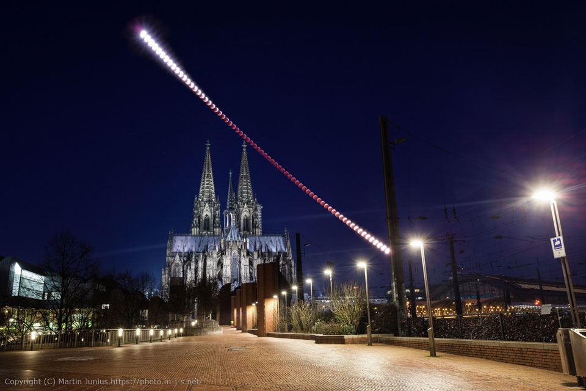

https://api.nasa.gov/planetary/apod?api_key=NNKOjkoul8n1CH18TWA9gwngW1s1SmjESPjNoUFo
Image Credits: Martin Junius
Why would a bright full Moon suddenly become dark? Because it entered the shadow of the Earth. That's what happened Sunday night as the Moon underwent a total lunar eclipse. Dubbed by some as a Super (because the Moon was angularly larger than usual, at least slightly) Blood (because the scattering of sunlight through the Earth's atmosphere makes an eclipsed Moon appeared unusually red) Wolf (because January full moons are sometimes called Wolf Moons from the legend that wolves like to howl at the moon) Moon Eclipse, the shadowy spectacle was visible from the half of the Earth then facing the Moon, and was captured in numerous spectacular photographs. Featured, a notable image sequence was captured over the Cologne Cathedral, a UNESCO World Heritage Site, in Cologne, Germany. The lunar eclipse sequence was composed from 68 different exposures captured over three hours during freezing temperatures -- and later digitally combined and edited to remove a cyclist and a pedestrian. The next total lunar eclipse will occur in 2021. Gallery: Sunday Night's Total Lunar Eclipse
{
"copyright": "Martin Junius",
"date": "2019-01-22",
"explanation": "Why would a bright full Moon suddenly become dark? Because it entered the shadow of the Earth. That's what happened Sunday night as the Moon underwent a total lunar eclipse. Dubbed by some as a Super (because the Moon was angularly larger than usual, at least slightly) Blood (because the scattering of sunlight through the Earth's atmosphere makes an eclipsed Moon appeared unusually red) Wolf (because January full moons are sometimes called Wolf Moons from the legend that wolves like to howl at the moon) Moon Eclipse, the shadowy spectacle was visible from the half of the Earth then facing the Moon, and was captured in numerous spectacular photographs. Featured, a notable image sequence was captured over the Cologne Cathedral, a UNESCO World Heritage Site, in Cologne, Germany. The lunar eclipse sequence was composed from 68 different exposures captured over three hours during freezing temperatures -- and later digitally combined and edited to remove a cyclist and a pedestrian. The next total lunar eclipse will occur in 2021. Gallery: Sunday Night's Total Lunar Eclipse",
"hdurl": "https://apod.nasa.gov/apod/image/1901/LunarEclipseCologne_Junius_1280.jpg",
"media_type": "image",
"service_version": "v1",
"title": "Lunar Eclipse over Cologne Cathedral",
"url": "https://apod.nasa.gov/apod/image/1901/LunarEclipseCologne_Junius_960.jpg"
}